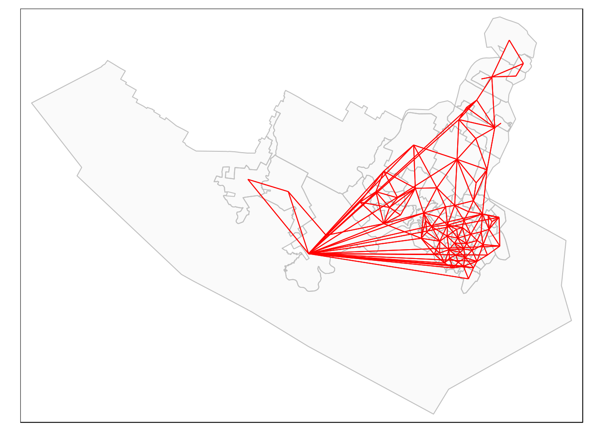

Spatial Autocorrelation of Census Data using R
By Connor Schultz
Introduction
Every 5 years a census in Canada is conducted by Statistics Canada. The census is one of the most important collections of data available to the public, as it contains accurate information country-wide pertaining to many attributes that can be used in all types of research. Census data is inherently spatial as the country is divided into census tracts and attributes are recorded for each tract. Spatial analysis is an important tool to use when dealing with census data. It allows the analyst to determine similarities, differences, correlations and many other relationships between one region and another.
One of the most commonly used spatial analysis techniques is determining spatial auto correlation. Put simply, spatial auto correlation is how similar an object is to nearby objects. With measures of spatial auto correlation, analysts can determine if variables such as median income or unemployment rate are clustered, dispersed or randomly distributed in a given study area.
In this tutorial, the R programming language along with census data will be used to show how to determine measures of spatial auto correlation in specific regions. This tutorial will use 2016 Canadian census data and a shape file of the Capital Regional District (CRD) of BC. The attributes that will be examined are median household income and post-secondary education. Various techniques such as Global and Local Morans I will be used to measure the spatial auto correlation of the attributes mentioned for the CRD census tracts. This tutorial is designed to be adaptable so the methods can be utilized for other census attributes and other census tracts.
Loading Libraries
One of the best ways to increase the power and effectiveness of the R programming language is to use packages. Packages contain functions and data developed by the open source community. To install a package the command install.packages('package_name') can be run in the R console, or the command can be implemented in the R script explicitly. Packages only need to be installed on to the machine once. To load the package for use in an R script, simply run the command library(package_name). The packages will need to be reloaded upon each new session of R. The following packages will be used in the subsequent analysis:
library(plyr)
library(dplyr)
library(spdep)
library(GISTools)
library(raster)
library(maptools)
library(rgdal)
library(tmap)
library(BAMMtools)The plyr and dplyr packages are used for data manipulation and preprocessing. The GISTools, raster and rgdal packages are used to manage and manipulate spatial data, such as the census data shape file used in this analysis. The spdep package handles the spatial statistics functions such as calculating the Morans I statistic. Finally, the maptools,tmap and BAMMtools will allow us to visualize our spatial data and plot our derived statistics.
Setting Working Directory
A crucial step in any R project is setting the working directory so R knows where to look for files. Any easy way of obtaining the working directory path name in R-Studio is to run the pwd command on the command prompt of the project. Once the path name is obtained, it can be stored as a variable dir and used as input in the function setwd() to set the working directory.
dir <- "/home/connor/schoolwork_2020/first_semester/geog418/assignments/assignment3"
setwd(dir)Adding Data
The attribute data for this analysis is 2016 census data for the CRD, stored in a csv file. The csv file is read in using read.csv(), where "./data/CensusTractData.csv" is the path to the csv file. This file is then stored in a data frame as census.16. The spatial data used is a shape file of the CRD which is read in using readOGR() from the rgdal package. The dsn points to the folder where the shape file components are stored and layer is the layer name of the shape file. This file is then stored in a spatial data frame as tracts. If the shape file is loaded correctly the R-console will output a small summary of the file, such as the source and number of features.
census.16 <- read.csv("./data/CensusTractData.csv")
tracts <- readOGR(dsn = "./data", layer = "Vic_Census")## OGR data source with driver: ESRI Shapefile
## Source: "/home/connor/schoolwork_2020/first_semester/geog418/assignments/assignment3/kingschultz21.github.io/data", layer: "Vic_Census"
## with 78 features
## It has 2 fieldsMerging Data
Now that we have both spatial and attribute data loaded into R, we can merge the data together using an attribute join. The merge() function accepts two data frames as input and joins them based on a common attribute. Both files share a “GUID” attribute or Geographical ID so it will be used as the common attribute. The joined data frame is then stored in the crd.data variable. The following two lines remove all na values from the data set for the attributes of interest: median household income and post-secondary education. print(crd.data) gives a summary of the spatial data frame and is a way of checking that the data has been added successfully.
crd.data <- merge(tracts, census.16, by = "GUID")
crd.data <- crd.data[!is.na(crd.data$MInc),]
crd.data <- crd.data[!is.na(crd.data$Psecondary),]
print(crd.data)## class : SpatialPolygonsDataFrame
## features : 74
## extent : 3903547, 3974156, 1910542, 1962451 (xmin, xmax, ymin, ymax)
## crs : +proj=lcc +lat_1=49 +lat_2=77 +lat_0=63.390675 +lon_0=-91.86666666666666 +x_0=6200000 +y_0=3000000 +datum=NAD83 +units=m +no_defs +ellps=GRS80 +towgs84=0,0,0
## variables : 103
## names : GUID, CTUID, CUID, Pop, PopCh, PopD, Area, Age0yrs, Age15yrs, Age65yrs, AvgAge, Detach, Apart, SemiD, Row, ...
## min values : 9350001, 9350001.00, 1, 332, -2, 21.1, 0.5, 105, 210, 20, 29.2, 70, 0, 0, 0, ...
## max values : 9350180.06, 9350180.06, 180.06, 10393, 44.2, 7582.6, 221.58, 2000, 7300, 2410, 56.5, 2715, 3185, 315, 460, ...Data Visualization
Before we begin our analysis, we can explore our data and visualize it using the tmap package. The following code is the general syntax for constructing a map using tmap, and if you are familiar with the R-package ggplot2 the syntax should feel very similar. tmshape() specifies the spatial data frame to be visualized and tm_polygons() provides an interface for accessing the attribute data of the data frame. The col variable is the vector in which we would like to access, which for this example is household median income. The style variable specifies the classification algorithm and n specifies the number of classes.
map_PopDensMInc <- tm_shape(crd.data) +
tm_polygons(col = "MdInc",
title = "Median Household Income",
style = "jenks",
palette = "-RdGy", n = 6)
map_PopDensMIncThe same process was repeated for the post-secondary education attribute with the same number of classes and the same classification algorithm.
To further visualize the data, we can visualize a neighbor network over the CRD. The function poly2nb() from the spdep package constructs a list of neighbors from a spatial data frame. The function nb2lines(), also from the spdep package creates a network from the neighbors list with an arc from each polygons centroid to the centroid of each neighboring polygon. The network stored in crd.net can then be visualized on top of the CRD by using tmap.
crd.nb <- poly2nb(crd.data)
crd.net <- nb2lines(crd.nb,coords=coordinates(crd.data))
tm_shape(crd.data) + tm_borders(col='grey') +
tm_fill(col = 'lightgrey', alpha = 0.1)+
tm_shape(crd.net) + tm_lines(col='red')
The poly2nb() function can also take a parameter called queen as input in addition to the spatial data frame. This parameter is set to TRUE by default. If queen == TRUE then polygons sharing a single boundary point meet the neighbor criteria. If queen == FALSE then polygons must share more than one boundary point to meet the neighbor criteria. The following code overlays the two networks, one where queen == TRUE (red) and one where queen == FALSE (blue) to visually show the difference.
crd.nb2 <- poly2nb(crd.data, queen = FALSE)
crd.net2 <- nb2lines(crd.nb2,coords=coordinates(crd.data))
tm_shape(crd.data) + tm_borders(col='grey') +
tm_fill(col = 'lightgrey', alpha = 0.1)+
tm_shape(crd.net) + tm_lines(col='red', lwd = 1)+
tm_shape(crd.net2) + tm_lines(col='blue', lwd = 1)Neighborhood Weights Matrix
The neighbors list crd.nb constructed previously is binary and only shows if polygons are neighbors or not. In order to add weights to the neighbors list, the function nb2listw() from the spdep package is used. This function takes a binary list of neighbors (crd.nb) and adds spatial weights. The zero.policy parameter specifies whether or not to allow weight vectors of length zero and the style parameter specifies the coding scheme. "W" indicates that a row-standardized coding scheme will be used. The resulting list of weighted neighbors is stored in crd.lw. Printing this list provides a summary of the data.
crd.lw <- nb2listw(crd.nb, zero.policy = TRUE, style = "W")
print.listw(crd.lw, zero.policy = TRUE)## Characteristics of weights list object:
## Neighbour list object:
## Number of regions: 74
## Number of nonzero links: 424
## Percentage nonzero weights: 7.742878
## Average number of links: 5.72973
##
## Weights style: W
## Weights constants summary:
## n nn S0 S1 S2
## W 74 5476 74 29.46931 322.5924Lag Means Statistic
Now that we have created a weighted list of neighbors (crd.lw), we can visualize or data, taking spatial dependence into account. The function lag.listw() from the spdep package outputs a vector of polygons that is a weighted sum of the values at neighboring locations specified by crd.data$MDInc and crd.lw. The output vector is attached to the crd.data spatial data frame and then mapped using tmap. The following code calculates the spatially lagged household median income variable crd.data$IncLagMeans.
crd.data$IncLagMeans = lag.listw(crd.lw, crd.data$MdInc, zero.policy = TRUE)
map_LagMean <- tm_shape(crd.data) +
tm_polygons(col = "IncLagMeans",
title = "Median Household Income\nLagged Means",
style = "jenks",
palette = "-RdGy", n = 6)
map_LagMeanThe same process is repeated for the post-secondary education variable to create a spatially lagged post-secondary education vector crd.data$PSLagMeans.
The map of spatially lagged median household income shows some indications of spatial dependence when compared to its non-spatially lagged counterpart produced previously. The spatially lagged post-secondary education map is similar to its non-spatially lagged counterpart and does not visually show indications of spatial dependence.
Morans I Statistic
In order to determine if there is spatial auto correlation between census tracts and a specific attribute (median household income, post-secondary education), the Morans I statistic is used. The Global Morans I is a measure of clustering of all the data and produces one measure for the entire data set. Alternatively, the Local Morans I is a measure of clustering in the individual units (Census Tracts) of a data set, and produces a measure for each unit. A Morans I value of 0 indicates a random distribution, a value less than 0 indicates dispersion and a value greater than 0 indicates clustering. Both the Global and Local Morans I are calculated below.
Global Morans I
The Global Morans I measures the overall clustering or spatial auto correlation of a data set. In order to calculate the Global Morans I, the moran.test() function from the spdep package is used. This accepts an attribute vector (crd.data$MdInc) as well as a weighted list of neighbors (crd.lw) as input and returns a list of Morans I data such as the Morans I statistic and p-value. Printing this variable (mi) provides a summary of the Morans I data. The range of Morans I values can be determined by using the moran.range() function. The Morans I value, the Expected Morans I value and the variance can be extracted from mi by accessing the estimate vector of mi (mi$estimate[[]]). Once these values are extracted the z-score can be determined by \(z = (Mi - Ei) / \sqrt var\). The following code shows the calculation of the Global Morans I as well as the z-score for median household income in the CRD.
mi <- moran.test(crd.data$MdInc, crd.lw, zero.policy = TRUE)
print(mi)##
## Moran I test under randomisation
##
## data: crd.data$MdInc
## weights: crd.lw
##
## Moran I statistic standard deviate = 2.2665, p-value = 0.01171
## alternative hypothesis: greater
## sample estimates:
## Moran I statistic Expectation Variance
## 0.143170949 -0.013698630 0.004790316moran.range <- function(lw) {
wmat <- listw2mat(lw)
return(range(eigen((wmat + t(wmat))/2)$values))
}
cat("moran range: ",moran.range(crd.lw))## moran range: -0.8193252 1.082105mI <- mi$estimate[[1]]
eI <- mi$estimate[[2]]
var <- mi$estimate[[3]]
z <- (mI - eI) / (sqrt(var))
cat("z-score: ", z) ## z-score: 2.266505The same process is repeated to determine the Global Morans I and z-score for post-secondary education in the CRD.
##
## Moran I test under randomisation
##
## data: crd.data$Psecondary
## weights: crd.lw
##
## Moran I statistic standard deviate = 1.0459, p-value = 0.1478
## alternative hypothesis: greater
## sample estimates:
## Moran I statistic Expectation Variance
## 0.059720205 -0.013698630 0.004927578## moran range: -0.8193252 1.082105## z-score: 1.045901The z-score and p-value of the Global Morans I indicate that there is statistically significant spatial auto correlation of median household income in the data set. This means that there are indications of clusters of similar median household income in the CRD. Alternatively, the z-score and p-value for post-secondary education indicate that the Global Morans I statistic is not statistically significant.
Local Morans I
The Local Morans I measures the clustering or spatial auto correlation of units within a data set, in our case census tracts. The Local Morans I statistic is calculated using the localmoran() function in the spdep package. This function uses the same inputs as the moran.test() function used in the Global Morans I calculation. This function returns a list of Local Morans I data such as the Morans I statistics and p-values for each unit. This list is stored in a data frame lisa.test and the vectors are then added to the crd.data spatial data frame by accessing the values stored in lisa.test. The following code shows the calculation of the Local Morans I for the median household income attribute.
lisa.test <- localmoran(crd.data$MdInc, crd.lw)
crd.data$Ii_MInc <- lisa.test[,1]
crd.data$E.Ii_MInc<- lisa.test[,2]
crd.data$Var.Ii_MInc<- lisa.test[,3]
crd.data$Z.Ii_MInc<- lisa.test[,4]
crd.data$P_MInc<- lisa.test[,5]The same process is repeated to determine the Local Morans I for post-secondary education in the CRD.
The Local Morans I statistic calculated above can then be visualized using tmap. The colour of each census tract will represent the Morans I statistic for that given census tract. The following code shows the thematic mapping of the Local Morans I of median household income for each census tract.
map_LISA <- tm_shape(crd.data) +
tm_polygons(col = "Ii_MInc",
title = "Local Moran's I: Median Household Income",
style = "jenks",
palette = "-RdGy", n = 6)
map_LISA
The same process as above is repeated to produce a thematic map of the Local Morans I of post-secondary education for each census tract.
The map of Local Morans I for median household income shows indications of clustering in the center census tracts as well some indications of clustering in the lower right quadrant of the CRD. Alternatively, the map of Local Morans I for post-secondary education follow a more random distribution as well as having a smaller range of Local Morans I values.
The Local Morans I statistic can be plotted using the moran.plot() function contained in the spdep package. The plot shows the spatial data versus its spatially lagged counterpart (crd.lw). The following code shows the creation of a Local Morans I plot for median household income CRD.
moran.plot(crd.data$MdInc, crd.lw, zero.policy=NULL, spChk=NULL, labels=NULL, xlab="Median Household Income",
ylab="Spatially Lagged Median Household Income", quiet=NULL)The same process shown above is repeated to produce a Local Morans I plot for post-secondary education in the CRD.

Each point on the plot represents a census tract and the highlighted points are census tracts in which the p-value for the Local Morans I is statistically significant. The line on each plot shows the linear relationship between the data and the lag. The first plot of median household income shows that as median household income increases, so does spatially lagged median household income. This indicates spatial auto correlation. The second plot of post-secondary education shows a similar relationship, however the slope of the line is much closer to that of a random distribution.
Summary
The goal of this tutorial was to show the power and effectiveness of the R-programming language applied to spatial statistics. In a relatively condensed and simple process, we have transformed raw census data and a basic shape file of census tracts into figures and data describing spatial auto correlation for a given study area. Many of these processes can be performed in a stand alone desktop GIS environment, however the flexibility and modifiability of code is unparalleled by any GIS project. The analyses in performed in this tutorial can be used in a larger program with a greater scope, or the methods can be applied to other regions or census tracts to perform a spatial auto correlation analysis relating to the topic at hand. In summary, R has proven itself to be an effective tool for spatial data science projects, and with all the packages created by the open source community, it is easier than ever to perform complex spatial analysis methods such as those done in this tutorial.